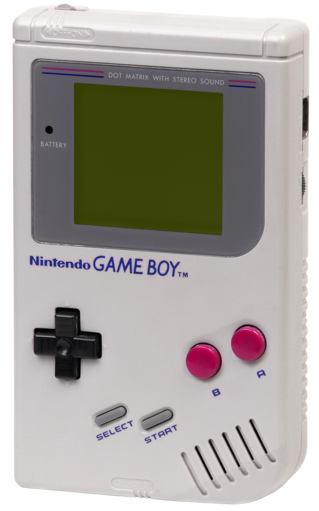
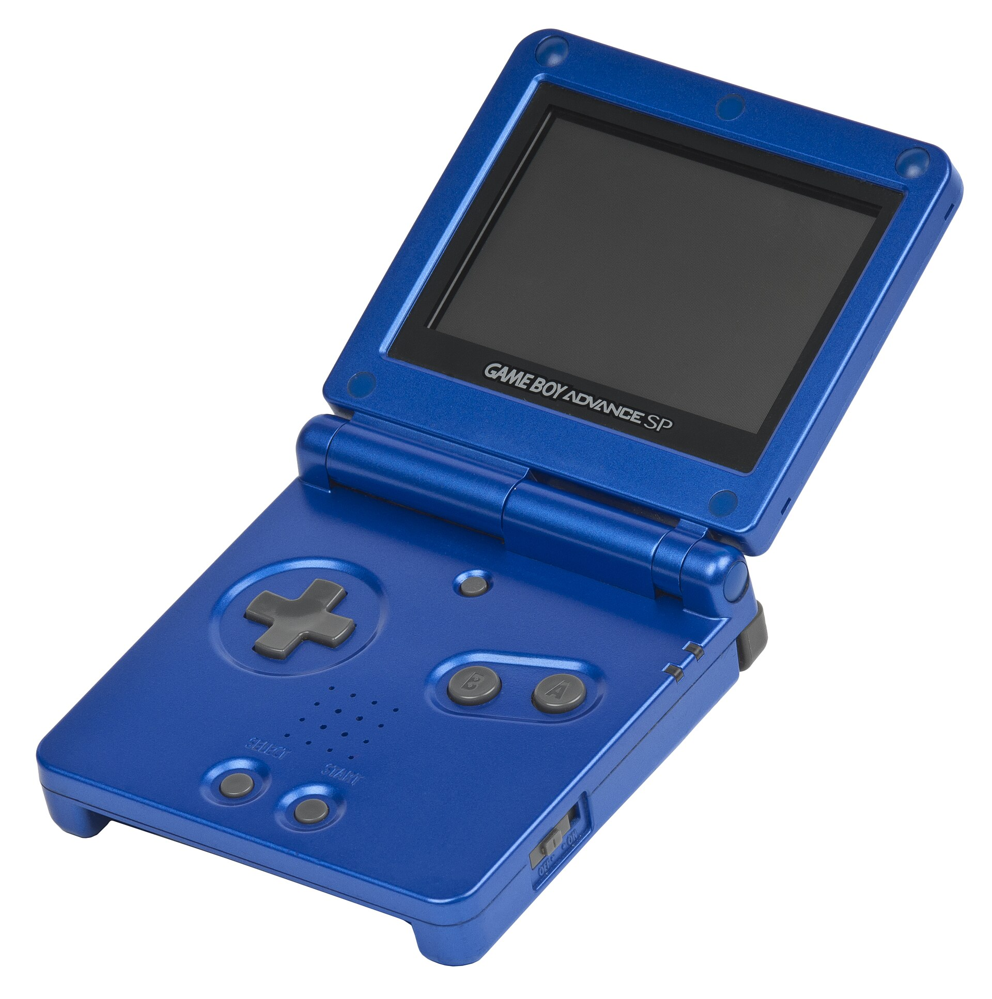
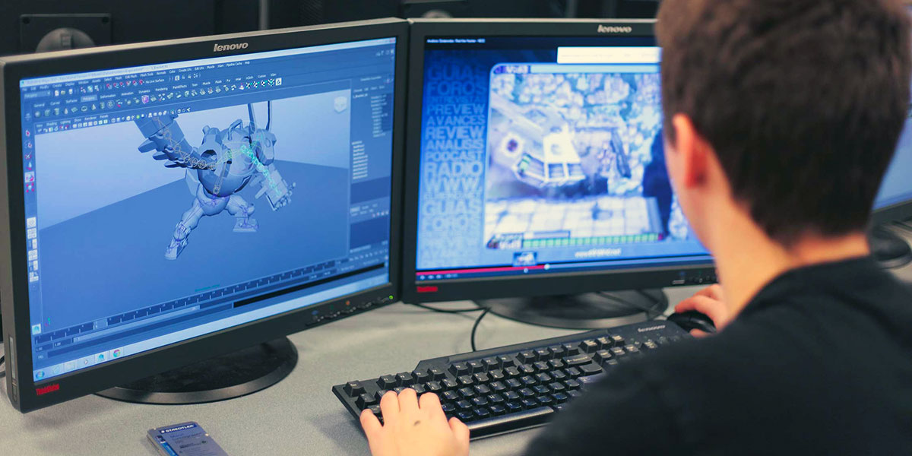

INTRODUCTION
Making and developing video games is not easy, but it has never been easier than it was before. Back in the 1990s and 2000s developers had to squeeze their games onto all kinds of underpowered systems, consoles and handheld devices. Modern day developers don't have to deal with these extreme restrictions with home computers, consoles and even handheld devices being more powerful than ever. So why do we sometimes get diminishing returns?


The game boy family is a perfect example of a system that really lacks power. But that didnt stop developers from SQUEEZING anything onto them!
Recently on the internet I've seen discussions online when comparing newer games to the older titles and the conclusion is most of the time that the most recent ones look and perform underwhelmingly. Meanwhile the old ones do hold up visually and perform better while having way less requirements.

A little sneek peak into a development studio.
So how about we take a look at some? Before we start this tour I would like to mention that this is a bit of a subjective list. I'm just a 16 year old college student so I can't include all of the titles that are technically mindblowing but I tried to include as many of them as I could. So without any further ado…